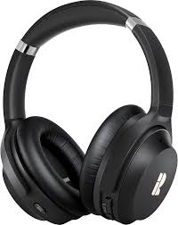
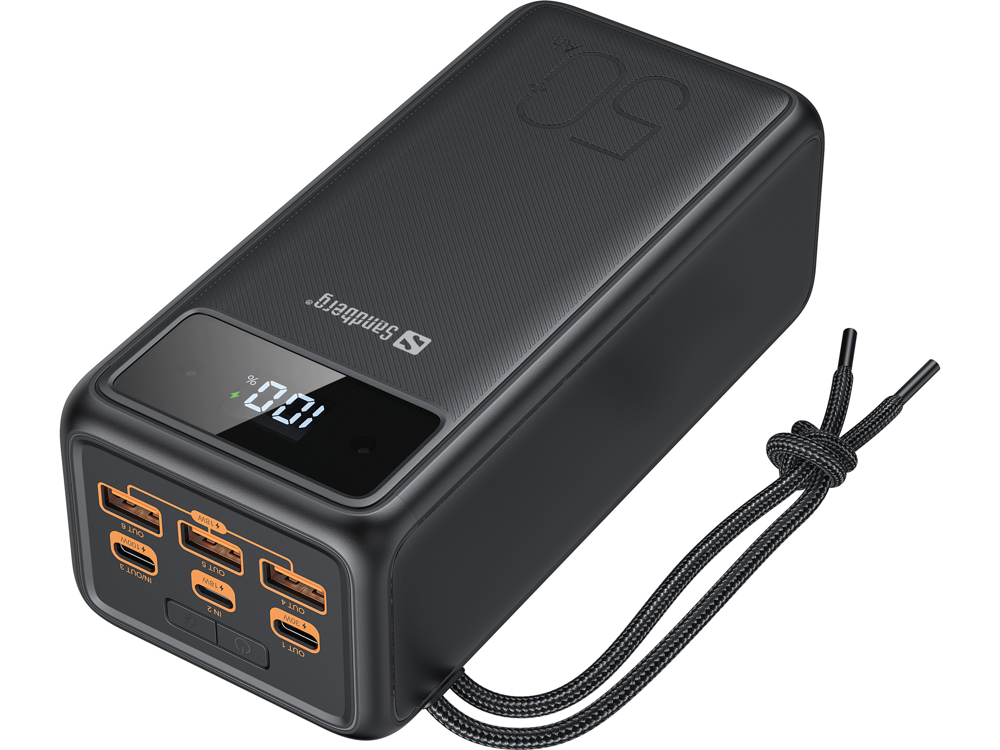
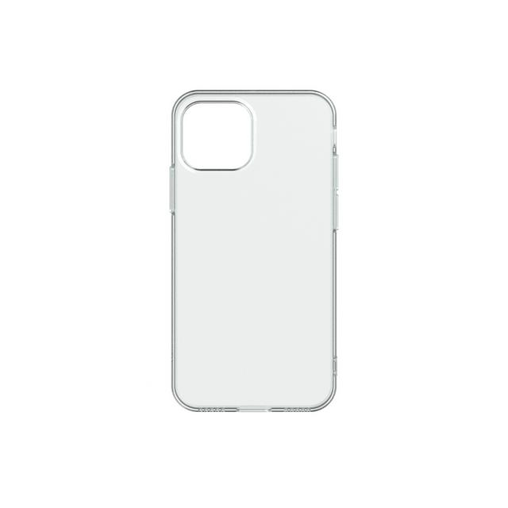
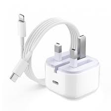
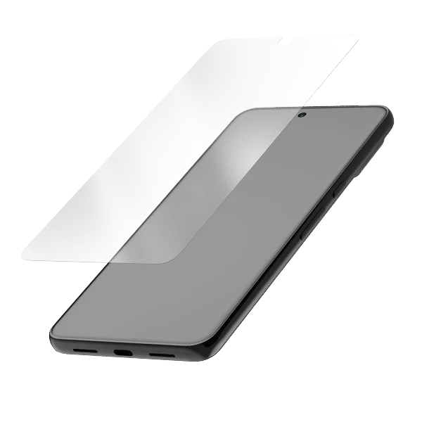

Accessories
Mobile accessories are tools that are compatible with most mobile devices in order to further enhance user experience with it or protect the device and user outright. Some of these accessories include, phone cases, headphones, powerbanks, chargers and many more.
I have included a video next to all of the accessories listed here for you to watch and get a more detailed understanding about them.
Headphones 
Headphones are primarily used to connect to your device and allow you to privately listen to audio from your phone without it coming out of the built in speaker.
VIDEO
Powerbanks 
Powerbanks are small devices which store charge within them after charging them previously and allowing you to connect one to your device with a cable to transfer the charge from the bank over to the device to allow for longer time spent on your phone before it runs out of charge.
VIDEO
Phone Cases 
Phone cases are designed to go on the back and sides of your phone to try and protect the back from any damages. Along with this, some cases allow for storage to put in your cards or money in.
Chargers 
Chargers are the most important accessory to have when owning a mobile device since they run on a battery with limited charge in, you need to recharge them from time to time and these chargers are how you do that.
VIDEO
Screen protectors 
Screen protectors are designed to protect your phone's screen by placing it over your screen and it will absorb the impact if you drop the phone and crack instead of your atual phone screen.
VIDEO